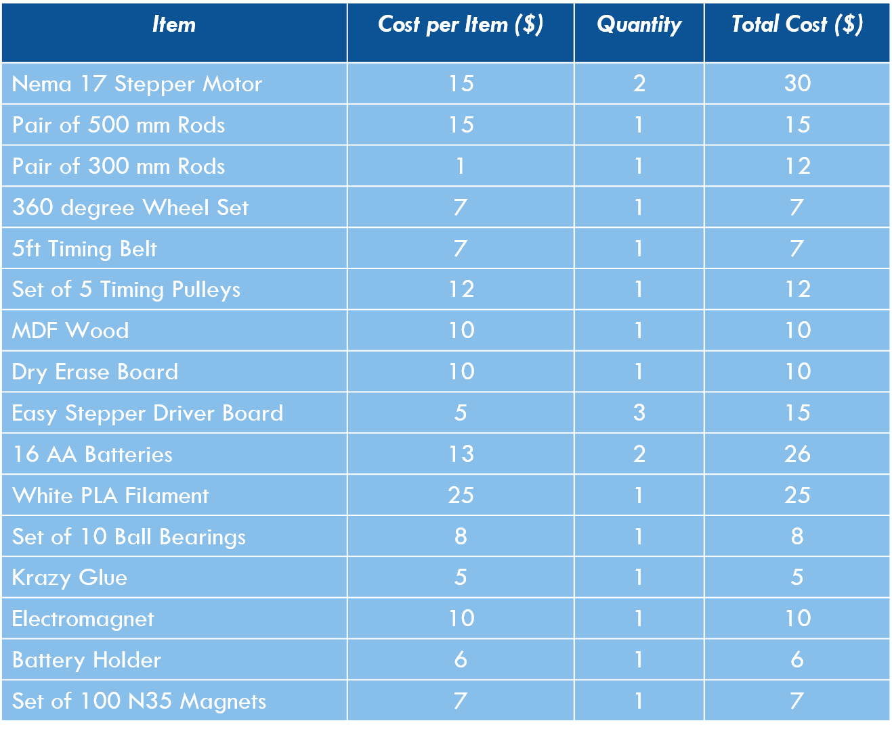
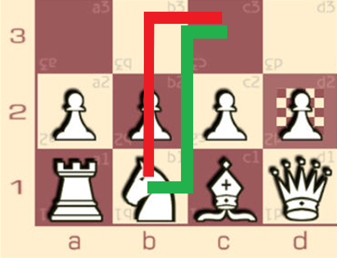

Wizard's Chess

Project Overview
Driven by a borderline obsessive love of Harry Potter and a fear of final exams, 2 friends and I designed and constructed a magnetic wizard's chess board in place of a traditional final. The project was heavily influenced by this project by Robert Rudolph. Our system dimensions ran up to 18"x18"x6" with an active area (wherein pieces are moveable) of ~14"x12", and our cost totaled to $205.
Function
I modeled and printed supports and carriages for each motor and axis. Using an Arduino, we drive 2 stepper motors and connected belts to move the main carriage. The main carriage supports an electromagnet which can also be activated and deactivated with the Arduino. We embedded magnets in the chess pieces to allow the electromagnet to drag them, and achieve motion in the system. The system ran directly from a computer, and was powered by 12V DC.
Personal Accomplishments
This was the first time I had full control of a 3D Printer, and of course I went mad with power. Given our time crunch, I got a lot of experience with rapid prototyping using a FDM printer. I was also able to develop my cad skill while designing the necessary supports and system assembly. The experience I didn't consider on the way in was the exposure to the hand tools needed to assemble the box that housed the system components.
Electronic Configuration
Motion in the system was reliant upon 2 NEMA17 stepper motors. They're driven by an Arduino and an EasyDriver board. The Arduino required a 12V power source, and we used 8 AA batteries.
Challenges
One consideration we missed was how the drain on the batteries would affect the performance. This resulted in motion stopping at random times with us attributing to other issues potential issues. In a future iteration we would like use a more consistent source.

Mechanical Function
The rotation of the stepper motors rotates an attached pulley and belt. The belts are attached to printed carriages that work in tandem to move the electromagnet.
Constraints
We wanted to ensure the smoothest and most user-friendly gameplay possible, meaning a user at the very least should be able to perform any legal move. Any horizontal motion can be achieved with a single motor. For a bishop's pure diagonal motion, we had to drive both motors simultaneously. The knight posed the largest issue in that magnets are not the best for launching pieces with precision. We decided that the pieces had to be able to move in between one another. Rather than taking the traditional path for a knight (red in path image), we made our motions based on a half-step so that the knight could take an interstitial path (green in path image).
Testing
To clarify some of the gaps in the motor documentation, we tested how far 1600 steps would take us in each axis, and used that to specify our step size.